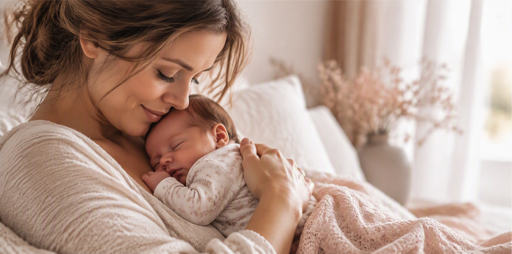

Je hoeft het niet alleen te doen
De eerste weken met een baby zijn bijzonder. Maar ze kunnen ook vermoeiend, onzeker en overweldigend zijn.
Tegelijkertijd staat de kraamzorg onder druk. Gezinnen krijgen regelmatig minder ondersteuning dan zij hadden verwacht en kraamverzorgenden hebben vaak minder tijd dan zij zelf zouden wensen.
MamaRust biedt aanvullende ondersteuning aan huis, zodat ouders meer ruimte krijgen voor rust, herstel en genieten van hun nieuwe gezin.
begint MamaRust.
Aanvullende ondersteuning voor jonge gezinnen, juist wanneer extra rust en aandacht welkom zijn.

Herken je dit?
- De kraamperiode loopt ten einde, maar je voelt je nog niet volledig hersteld.
- Je hebt behoefte aan extra rust of praktische ondersteuning.
- Familie woont niet in de buurt.
- Je wilt tijd voor jezelf, terwijl er goed voor je baby wordt gezorgd.
- Je zoekt een vertrouwd gezicht dat even met je meedenkt.
MamaRust biedt ondersteuning op een manier die aansluit bij jouw gezin en jouw behoeften.
Wat MamaRust voor je kan betekenen
Iedere moeder en ieder gezin is anders. Daarom wordt de ondersteuning altijd afgestemd op jullie situatie en behoeften.
- Verzorging van je baby terwijl jij even op adem komt
- Bereiden van een gezonde maaltijd voor het gezin
- Een was draaien, opvouwen of wegwerken
- Het verschonen van het bed voor een frisse herstelomgeving
- Aandacht en begeleiding voor oudere kinderen
- Een luisterend oor wanneer je behoefte hebt aan een gesprek
- Hulp bij het creëren van rust en overzicht in de dag
- Praktische ondersteuning afgestemd op jullie gezin
🌿 MamaMoment
3 uur ondersteuning aan huis
Voor wanneer je even wilt uitrusten, herstellen of simpelweg wat extra handen kunt gebruiken.
- ✓ Direct ruimte om op adem te komen
- ✓ Persoonlijke ondersteuning op maat
- ✓ Laagdrempelig kennismaken met MamaRust
🤍 MamaRust Dagdeel
⭐ Meest gekozen
5 uur ondersteuning aan huisVoor moeders die behoefte hebben aan een volledig dagdeel rust, herstel en ontzorging voor het hele gezin.
- ✓ Voldoende tijd voor echt herstel en ontspanning
- ✓ Rust voor moeder, baby én eventuele kinderen
- ✓ Merkbaar meer ruimte en overzicht in huis
🌸 MamaRust Traject
⭐ Meest voordelige keuze per uur
8 bezoeken van 4 uur (32 uur ondersteuning)Voor gezinnen die ook na de kraamweek behoefte hebben aan een vertrouwd gezicht en extra ondersteuning.
- ✓ Continuïteit gedurende de eerste weken
- ✓ Een vast aanspreekpunt voor het gezin
- ✓ Langdurige rust, herstel en ontzorging
Een vertrouwd gezicht in een bijzondere periode
Over Esther • Meer dan 25 jaar ervaring in zorg, begeleiding en ondersteuning.
Soms heb je behoefte aan een luisterend oor. Iemand die rust brengt. Iemand die even naast je staat wanneer alles nieuw is.
Mijn naam is Esther Horlings. Naast mijn professionele ervaring neem ik ook mijn eigen ervaring als moeder mee. Mijn twee zonen zijn inmiddels volwassen, maar de bijzondere en soms intensieve eerste periode na hun geboorte staat me nog altijd bij.
Die combinatie van levenservaring en jarenlange ervaring in zorg en begeleiding neem ik mee in mijn werk voor MamaRust.
Geen haast, geen oordeel en geen standaard aanpak. Wel een luisterend oor, persoonlijke aandacht en een helpende hand wanneer je die nodig hebt.
Wat je van mij mag verwachten
- 🌿 Meer dan 25 jaar ervaring in zorg en begeleiding
- 🌿 Een vertrouwd gezicht in een bijzondere periode
- 🌿 Rust, betrokkenheid en betrouwbaarheid
- 🌿 Oprechte aandacht voor moeder, baby en gezin
- 🌿 Een veilige en persoonlijke benadering
Hoe kan ik je ondersteunen?
Iedere moeder en ieder gezin is anders. Daarom kijk ik altijd samen met jullie waar behoefte aan is en hoe ik het beste kan ondersteunen.
- 🌿 Tijd zodat jij kunt rusten, douchen of slapen
- 🌿 Verzorging van je baby terwijl jij even op adem komt
- 🌿 Een luisterend oor en ruimte voor jouw verhaal
- 🌿 Licht huishoudelijke ondersteuning
- 🌿 Hulp bij het creëren van rust en overzicht in de dag
Mijn missie
Ik gun iedere moeder een zachte landing in het moederschap.
Meer rust. Meer herstel. Meer ruimte om te genieten van deze bijzondere periode als gezin.
Belangrijke informatie
Niet-medische ondersteuning
MamaRust biedt geen medische zorg en vervangt geen kraamzorg, verloskundige zorg of huisartsenzorg.
MamaRust ondersteunt gezinnen op praktisch, emotioneel en welzijnsgebied, zodat ouders ruimte krijgen om te herstellen, te ontspannen en te genieten van hun nieuwe gezin.
Werkgebied
MamaRust ondersteunt jonge gezinnen in Drenthe en Groningen.
Woon je in de driehoek Assen, Emmen en Stadskanaal? Dan kom ik graag bij je thuis.
Twijfel je of je binnen mijn werkgebied valt? Neem gerust contact op. Samen kijken we naar de mogelijkheden.
Gun jezelf rust, herstel en ondersteuning
Je hoeft het niet alleen te doen.
Wil je weten wat MamaRust voor jouw gezin kan betekenen?
Een vrijblijvend kennismakingsgesprek is altijd mogelijk. Samen kijken we welke vorm van ondersteuning aansluit bij jullie gezin en jullie behoeften.